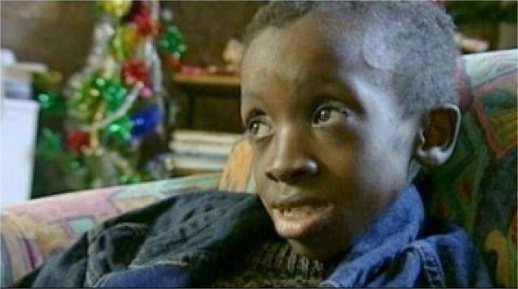

“关心我们并接受我们，我们都是人类” ——恩科西·约翰逊
早年的挑战与艾滋病的诊断

恩科西·约翰逊（Nkosi Johnson），出生于1989年，是南非最著名的艾滋病活动家之一。在他出生不久后，就被诊断为HIV阳性。恩科西的母亲也是HIV阳性，由于健康原因无法继续抚养他，因此他被一个寄养家庭收养。恩科西的成长之路充满了挑战，他不仅要与病魔作斗争，还要面对社会对艾滋病的巨大偏见和歧视。
公开抗艾与社会觉醒
恩科西的抗艾故事开始引起国际关注是在他年幼时，特别是2000年，他在南非的一次公开活动中发表了演讲，那是第13届国际艾滋病大会的开幕式。尽管当时只有11岁，恩科西的演讲却异常强大和感人，他呼吁社会对HIV感染者给予更多的支持和理解，特别是对儿童的关爱。
教育与倡导
恩科西的演讲不仅提高了公众对艾滋病问题的认识，也促进了政策的变化。他强调教育对于打破关于艾滋病的偏见至关重要。恩科西自己就曾因为HIV阳性的身份而被拒绝入学，他的这一亲身经历激发了他对教育权利的倡导。他的抗议引起了广泛的社会关注，并最终帮助改变了南非的教育政策，使得HIV感染的儿童也能得到公平的教育机会。
恩科西的避难所
除了作为公众演讲者的身份，恩科西及其养母Gail Johnson一同创建了“恩科西的避难所”（Nkosi's Haven），这是一个为HIV阳性母亲及其子女提供住所和护理的设施。这个项目反映了他对提供实际帮助的承诺，旨在解决许多HIV感染者面临的具体问题，如住房和医疗照顾。
健康挑战与遗产
尽管接受了治疗，恩科西的健康状况仍在逐渐恶化。2001年6月1日，恩科西因艾滋病相关并发症去世，享年12岁。尽管生命短暂，恩科西的影响却是深远的。他的勇气和言论改变了全球对HIV/AIDS儿童的看待方式，促进了相关政策和公众意识的改善。
持续的影响
恩科西·约翰逊的故事和精神继续激励着全世界。他的生活和工作促使人们关注HIV/AIDS问题，尤其是在儿童中的影响。恩科西的避难所继续运作，为需要的家庭提供支持。他的故事被多次记录和讲述，成为全球艾滋病倡导工作中的一个重要符号。
结语
恩科西·约翰逊虽然年纪轻轻就离开了人世，但他为艾滋病儿童发声的行动和无畏的精神将永远被记住。他的生命虽短，但他留下的影响深远，持续启发着后人在抗击艾滋病的道路上继续前行。
